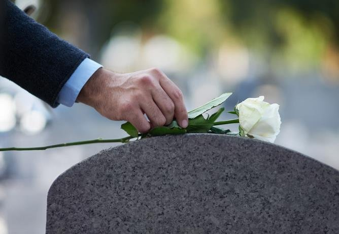

En el mundo de la limpieza de propiedades después de un incendio, la limpieza con ozono se ha establecido como una técnica revolucionaria, ofreciendo una solución eficaz para eliminar olores, desinfectar áreas afectadas, y mejorar la calidad del aire interior. Este método, aunque potente, lleva consigo varias preguntas respecto a su aplicación, seguridad, y eficacia. Este artículo tiene como objetivo proporcionar respuestas detalladas a estas preguntas, presentando una guía exhaustiva sobre la limpieza con ozono después de un incendio.
¿Qué es la Limpieza con Ozono?
La limpieza con ozono utiliza un gas, el ozono (O3), para purificar y desodorizar ambientes cerrados. El ozono es un oxidante fuerte que reacciona con partículas contaminantes en el aire, superficies, y tejidos, neutralizándolos efectivamente. Este proceso no solo elimina olores desagradables sino que también mata bacterias, virus, y otros patógenos, contribuyendo a un ambiente más seguro y limpio.

Ventajas de la Limpieza con Ozono
- Eliminación Efectiva de Olores: El ozono destruye las moléculas responsables de los olores, en lugar de simplemente enmascararlas.
- Desinfección Profunda: Al ser un potente desinfectante, el ozono elimina una amplia gama de microorganismos.
- Sin Residuos Químicos: A diferencia de los limpiadores tradicionales, el ozono se descompone en oxígeno, sin dejar residuos nocivos.
- Accesibilidad: Puede penetrar en áreas de difícil acceso, asegurando una limpieza y desinfección completas.
¿Cómo Funciona la Limpieza con Ozono?
La limpieza con ozono se realiza utilizando un generador de ozono, que convierte el oxígeno presente en el aire (O2) en ozono (O3). Este gas se dispersa en el ambiente, donde reacciona con contaminantes orgánicos e inorgánicos, neutralizándolos. Después del tratamiento, el ozono se descompone nuevamente en oxígeno, dejando el ambiente limpio y fresco.
¿Es Segura la Limpieza con Ozono?
Si bien el ozono es un gas potente y efectivo para la limpieza, también puede ser peligroso para humanos y animales si se expone a niveles altos sin las precauciones adecuadas. Por ello, la limpieza con ozono debe realizarse en espacios vacíos y por profesionales capacitados que sepan manejar correctamente los niveles y tiempos de exposición.
Aplicaciones de la Limpieza con Ozono Después de un Incendio
- Eliminación de Olores: Los incendios dejan un olor persistente a humo que es difícil de eliminar. El ozono ataca estas moléculas de olor, neutralizándolas efectivamente.
- Desinfección: Los incendios pueden crear un ambiente propicio para bacterias y moho. El tratamiento con ozono ayuda a desinfectar las áreas afectadas.
- Purificación del Aire: Mejora la calidad del aire interior, eliminando partículas contaminantes y olores.
Proceso de Limpieza con Ozono Después de un Incendio
- Evaluación de la Propiedad: Identificación de áreas afectadas y determinación del alcance del daño.
- Preparación: Cierre de la zona a tratar para evitar la dispersión del ozono.
- Generación de Ozono: Uso de generadores de ozono para tratar el ambiente.
- Ventilación: Después del tratamiento, el área se ventila adecuadamente para eliminar cualquier rastro de ozono antes de que las personas o animales regresen.
Consideraciones Importantes
- Tiempo de Exposición: Varía según el tamaño del área y la intensidad del olor o contaminación.
- Seguridad: Evitar la exposición directa durante el tratamiento.
- Profesionales Capacitados: Solo profesionales deben operar los generadores de ozono.
Preguntas Frecuentes
¿Cuánto tiempo se debe esperar para entrar a un espacio después de un tratamiento con ozono?
El tiempo de espera recomendado varía, pero generalmente se sugiere esperar al menos 4 horas después de finalizado el tratamiento y la ventilación adecuada del espacio.
¿Puede el ozono dañar materiales o textiles?
El ozono, en concentraciones controladas y por periodos limitados, no suele dañar la mayoría de los materiales. Sin embargo, es importante que los profesionales ajusten correctamente los niveles de ozono para evitar posibles deterioros, especialmente en materiales orgánicos sensibles.
¿Es el ozono efectivo contra el COVID-19 y otros virus?
El ozono ha demostrado ser efectivo contra varios tipos de virus, incluido el SARS-CoV-2, el virus responsable del COVID-19. Su capacidad para desinfectar y eliminar patógenos lo convierte en una herramienta valiosa en la prevención de enfermedades.
¿Cuánto cuesta un tratamiento de limpieza con ozono?
El costo varía según el tamaño del área a tratar, la duración del tratamiento, y la severidad de los olores o contaminación. Es recomendable consultar con profesionales para obtener una cotización precisa basada en las necesidades específicas.
¿Puedo comprar un generador de ozono y hacer el tratamiento yo mismo?
Aunque es posible adquirir generadores de ozono para uso doméstico, se recomienda encarecidamente que estos tratamientos sean realizados por profesionales. El manejo incorrecto del ozono puede tener riesgos para la salud y seguridad.
La limpieza con ozono después de un incendio ofrece una solución efectiva y segura para la limpieza de propiedades, eliminando olores, desinfectando áreas, y mejorando la calidad del aire interior. Al elegir esta tecnología, es crucial contar con el apoyo de expertos que aseguren un proceso seguro y eficaz, garantizando así los mejores resultados posibles en la recuperación del espacio afectado.